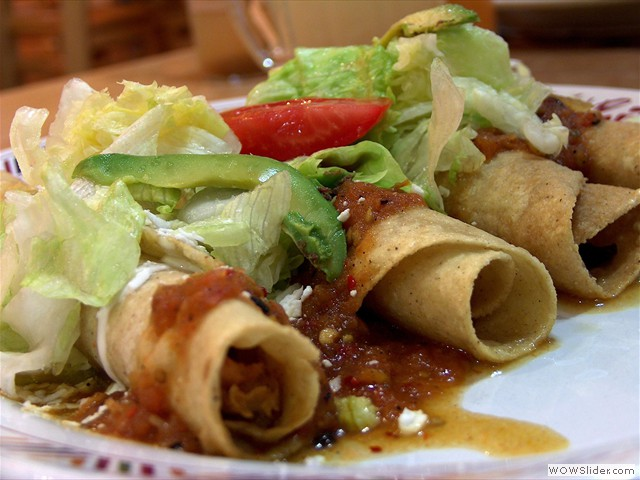

De carne, pollo, camaron.
Tambien conocidos como "camarones para pelar" o simplemente "Camarones Cocidos"
Acompañado de ensalada fria.
De camaron, carne de puerco o res, polllo.
Responsive Carousel
by WOWSlider.com v4.2